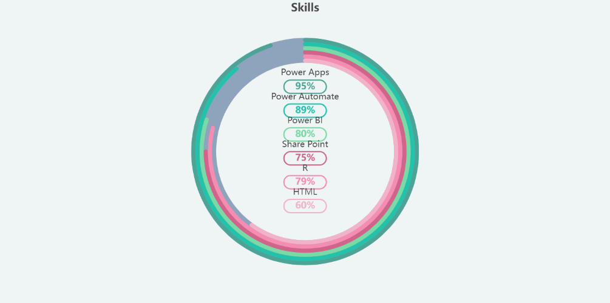

Lakshmi Priya S
Software Developer

Summary:
I am a Software Developer who has 1.3+ years of experience in developing Power
Apps application in Canvas, Model -driven and Portal using different type of connectors.
Write technical specifications, work with several teams and managed technical
dependency and derived design meetings and experience in Unit Testing.
Career Objective:
Currently seeking to work in a challenging environment that demands all of my skills.
I am striving to explore myself in different fields, realize my potential,
and contribute to the development of the organization with impressive performance.
Academic Qualification:
- Sri Chandrasekharendra Saraswathi Viswa Maha Vidyalaya University
BE(CSE)
CGPA: 9.19
- Venus Matriculation Higher Secondary School
School HSC
Percentage: 79.4%
- Venus Matriculation Higher Secondary School
School SSLC
Percentage: 86.6%
Work Experience:
- PreludeSys India Private Limited
Jan 2022- Apr 2023
- 1.3+ years of experience in developing power applications in Canvas,Model-Driven and Portal.
- Hands-on experience in Power Platform
- Good experience on handling power apps tool like Data Migration Utility tool, Ribbon work bench
- Write technical specifications, work with several teams and managed technical dependencies and derived design meetings
- Basic knowledge on .Net, SQL, Python, HTML, CSS and JavaScript
- Experience in Unit Testing.
Skills:

Soft Skills:
- Quick Learning through observation.
- Introspective and positive mindedness
- Proactive and resilient
Certifications:
- Microsoft Power Platform Developer
- Build solutions with Power Apps,Power Automate and SharePoint
- Microsoft Power BI Desktop for Bussiness Intelligence
- Internet of things with Pantech ProEd Pvt Ltd
- Interacting the world using IOT with MATLAB
- EDUCBA Oracle SQL Concepts and Commands
Others